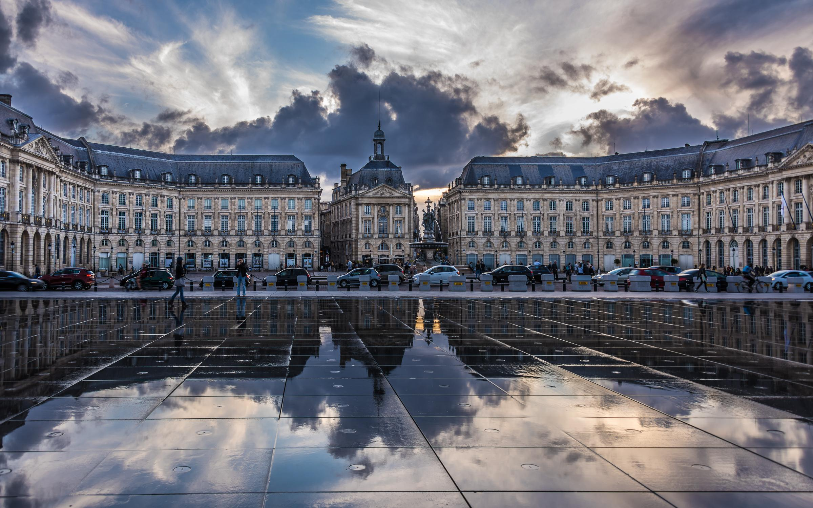

Anniversaire à Bordeaux
40e anniversaire de la promotion X77, du vendredi 29 septembre au dimanche 1er octobre 2017

81 camarades et leurs conjoints, soit 136 participants, ont fêté à Bordeaux le 40e anniversaire de la promotion. Trois jours de découvertes industrielles, de grands châteaux de Saint-Émilion et de promenades dans le Bordeaux du XVIIIe siècle, mais avant tout de retrouvailles dans une ambiance très amicale. Le dîner du samedi à la Cité du Vin a été l'occasion de présenter les résultats du sondage de promotion, et le dimanche notre camarade Luc Ravel a célébré la messe à Notre-Dame devant une cinquantaine d'entre nous. L'anniversaire a aussi donné lieu à un ouvrage collectif réunissant les « témoignages souvenirs » de 33 camarades et 14 « témoignages perspectives ».
L'anniversaire a été organisé par nos kessiers Philippe Charaix et Olivier Martin, avec Pierre Balsollier, Christine Blondel, Pierre Liautaud, Daniel Lippera, Michel Maschi, Bertrand Rémy et Patrick Tejedor.
Photos : Tristan de Viaris.